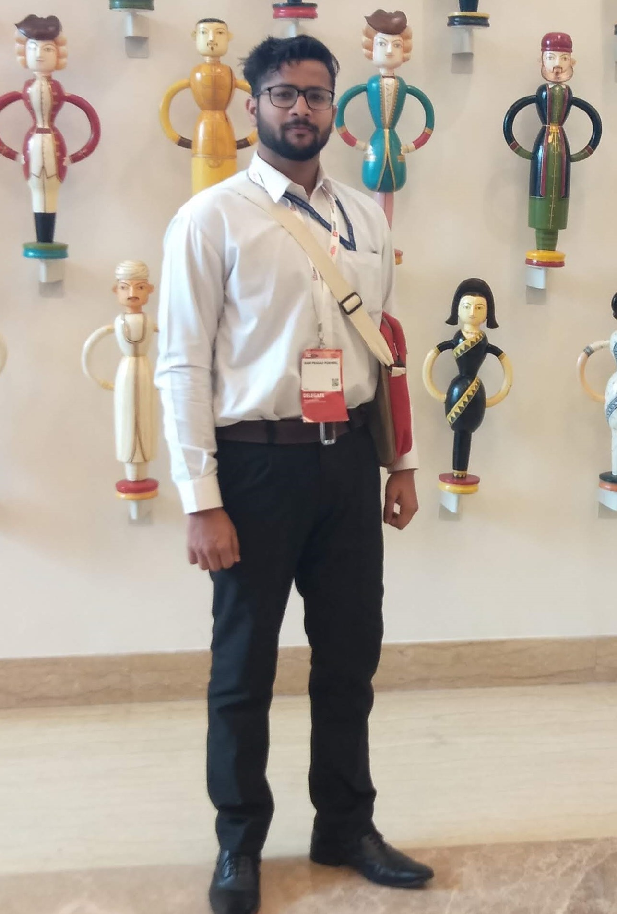

My Portfolio
Welcome to my webpage! Namaskaram! I'm Ram Prasad Pokhrel, a dedicated and self-driven Electronics and Computer Engineer with a degree in ECE. I am a strong advocate for continuous learning, mentoring, and mutual growth. My technical proficiency encompasses Embedded Systems, Internet of Things (IoT), Python, HTML, CSS, and Canva, to name a few.
I have a rich background in technical training, having worked as a Technical Trainer for approximately 8-9 months in a company from February 2021 to August 2021. I have also engaged in freelance tutoring, which has further refined my teaching skills.
I had the opportunity to complete an enriching internship as a Software Intern at Intel Corporation from 29th August 2022 to 12th May 2023. Subsequently, I was involved in a project to develop STEM training manuals and teach coding robotics and ICT in schools for 3 months.
Currently, I am on a break to finish my pending dissertation work and am simultaneously enhancing my skills by attending a training course in Advanced Embedded Systems at Viven Embedded Academy.
Apart from my professional life, I am a yoga aficionado and occasionally conduct yoga classes. I also provide therapeutic massage sessions, not as a professional, but as a way to positively impact my community in my spare time.
I am always eager to connect with like-minded individuals and explore new opportunities. Feel free to browse my webpage and let's grow together!
See you over there! Cheers.